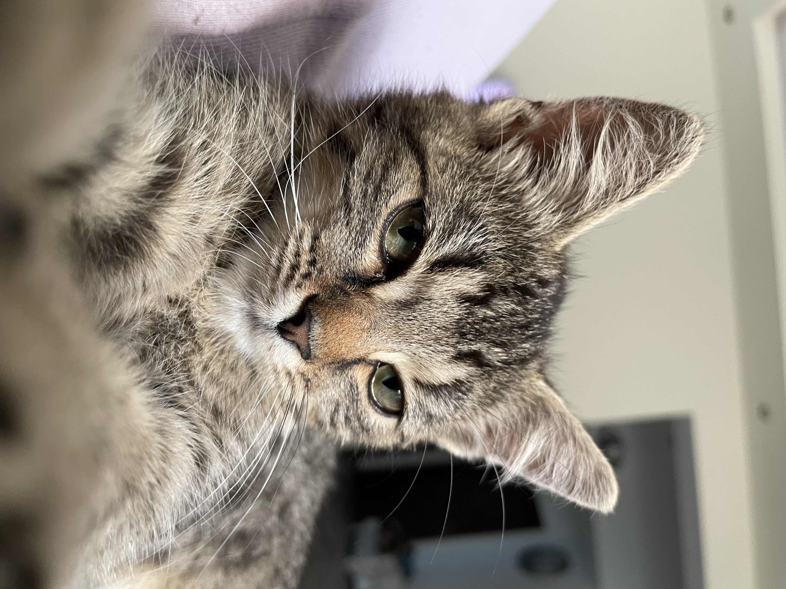

Érdekességek a macskámról

Szokott mosolyogni
Anya szerint ijesztő
Szereti ha nyúzzák

Mit csinál egy nap?
Reggelente az ajtó előtt várja a reggelijét, megköveteli, majd mikor megkapja, boldogan behabzsolja és egy falatot sem hagy belőle. Mivel reggelente elmegy mindenki otthonról, ezért az ebédet indulás előtt kitesszük neki.
Mivel nap közben nem vagyunk otthon, így nem vagyunk benne biztosak, hogy Mogyi mit művel, viszon nem csak benti macska, így valószínűleg a szomszédságot járja új barátok, vagy éppen a betevő falatáért (naponta háromsyor kap enni).
Késő délután - este fele egy kicsit be szoktuk engedni a házba, hogy velünk legyen, majd 7-8 óra körül kap vacsorát. Éjszaka általában elkóborol valamerre, viszont mindig visszatalál és reggelente az ágyában fekve találjuk a bejárati ajtó előtt.
Érdekességek a macskákról
Érdekesség
- A bizonyítékok szerint a macskák háziasítása i.e. 3600 évvel történt
Furcsaság
- A macskák gyakran laktózérzékenyek
Gondoltad volna?
- A macskák csak az ujjbegyeiknél izzadnak
| Reggel | Délben | Este |
|---|---|---|
| Coshida pulyka péstétom | Coshida száraz macskatáp | Coshida pulyka pástétom (esetleg aznapi maradék húsok) |